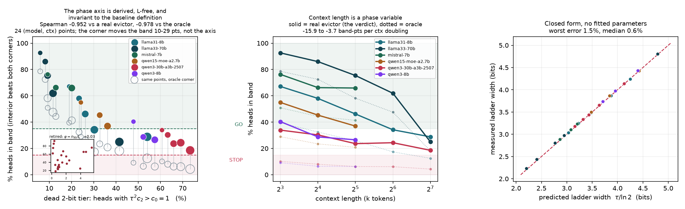

ICLR 2027 · project pitch · v4 · 20 model×context points, 33,920 heads
Quantize every token evenly, or throw most of them away — the field has argued between these for three years. They are corner solutions to one rate-allocation problem, each optimal in its own regime. We derive the boundary variable, show that a single model crosses all three phases as context grows from 4k to 128k, and identify a mis-specification in how eviction budgets are defined that makes the corner look better than it is at long context.
what the paper says
Serving long-context LLMs is bounded by the KV cache, and every method that shrinks it — quantization or token eviction — minimizes key reconstruction error. We show this is the wrong distortion measure. Posed against attention-output error, KV compression becomes a rate-allocation problem whose solution is reverse water-filling: the optimal budget for a token is linear in the log of its attention weight, and eviction emerges as the zero-rate case of the same equation, with cost constant \(c_0=1\) derived rather than posited. Comparing \(\tau^2c_b\) against that 1 yields both a phase diagram and its boundary variable: the fraction of heads whose low tiers are extinct. We measure it on 33,920 heads over 20 model×context configurations — six production models at matched context, plus two full sweeps from 4k to 128k. The dead-tier fraction predicts the outcome at Spearman \(\rho=-0.96\) across both architecture and context length; the closed-form ladder width \(\tau/\ln2\) holds to 1.4%. The sweeps show context length is itself a phase variable — llama3.1-8B goes GO → NARROW → STOP with nothing changed but \(L\) — and expose a mis-specification in the standard eviction budget: it keeps a fixed fraction of \(L\), while a head's actual support grows only as \(L^{0.6-0.9}\), so the corner is handed 16× → 71× more tokens than it needs as context grows.
why the field is stuck
At 128k+ context the KV cache dominates memory and decode bandwidth. Two families attack it, they disagree, and both are right — in different places, which nobody had established:
| Family | Allocates | How it fails |
|---|---|---|
| Eviction H2O, SnapKV | {0, 16} bits | Drops tokens a future query will need. Missing one critical key produces sharp error spikes in long-output reasoning. |
| Quantization KIVI, QJL, TurboQuant | {b, b} bits | Aggressive variants lose up to 20 points on AIME25 and ~30% relative on 256k retrieval, and pay 10–68% latency for dequantization. FP8 beats all of them on the Pareto frontier. |
Both fix the allocation a priori, then optimize a proxy objective — how faithfully a key is reproduced — that attention never evaluates.
Attention does not consume keys. It consumes \(o=\sum_i a_i v_i\). A key carrying 0.4 of the mass and a key carrying \(10^{-6}\) are not equally worth storing, and no reconstruction metric can tell them apart.
Swap the distortion measure and the answer is classical. With \(\operatorname{Var}(\delta_i)=\tau^2c_b\) and \(\partial o/\partial s_i = a_i(v_i-o)\), minimizing \(\mathbb{E}\|\Delta o\|^2\) under \(\sum_i b_i\le B\) is reverse water-filling:
$$b_i^\star=\log_2 a_i + c\,,\qquad b_i^\star = 0 \ \text{ below the water level.}$$Dropping a set and renormalizing costs exactly \(\sum_{i\in E}a_i^2\|o_R-v_i\|^2\), so eviction's cost constant is \(c_0=1\), derived. For the first time eviction and quantization are the same quantity on the same axis — and comparing \(\tau^2c_b\) against that 1 is what produces the phase diagram.
one derived axis, 20 model×context points, 33,920 heads

The boundary variable is not an empirical index we searched for. It is the same comparison that generates the theory: a tier at \(b\) bits is worth buying only while \(\tau^2c_b < c_0 = 1\). Count the heads where the 2-bit rung has fallen below that line and you have predicted the outcome.
At matched context, the ordering is exactly stable — the same ranking at 8k and at 32k, which is what licenses calling it an architecture property:
| model | band @8k | band @32k | dead-2 @32k | routed @32k | phase |
|---|---|---|---|---|---|
| llama3.3-70B | 79.1% | 58.5% | 9.2% | 2.29× | interior |
| mistral-7b | 51.3% | 41.5% | 20.1% | 1.82× | interior |
| llama3.1-8B | 39.3% | 25.7% | 26.2% | 1.50× | interior |
| qwen1.5-MoE | 29.4% | 20.1% | 37.1% | 1.39× | interior |
| qwen3-30B-A3B | 10.3% | 6.2% | 65.9% | 1.17× | sharp |
| qwen3-8B | 9.1% | 6.1% | 57.5% | 1.13× | sharp |
The Qwen3 family is pinned in the eviction corner at every context length — 60–73% dead tiers at 8k as readily as at 128k — because its attention is sink-dominated (median top-1 weight ≈ 0.5). That is an architectural phase, not a context effect, and the same axis separates it from the context-driven kind.
the result that reframes the paper
Every prior version of this work reported one verdict per model. That is ill-posed. Sweeping llama3.1-8B across five octaves with nothing else changed:
| ctx | \(\tau\) | dead-2 | in band | vs eviction | \(n_{95}\) | evictor slack | verdict |
|---|---|---|---|---|---|---|---|
| 4k | 1.94 | 14.4% | 46.3% | 1.85× | 97 | 15.8× | GO |
| 8k | 2.07 | 18.9% | 39.3% | 1.68× | 137 | 22.5× | GO |
| 16k | 2.22 | 23.4% | 33.0% | 1.41× | 229 | 26.9× | NARROW |
| 32k | 2.41 | 26.2% | 25.7% | 1.20× | 273 | 45.0× | NARROW |
| 64k | 2.67 | 30.3% | 17.5% | 1.07× | 347 | 70.8× | NARROW |
| 128k | 2.96 | 53.9% | 12.5% | 1.03× | 1161 | 42.3× | STOP |
The causal chain is fully mechanistic and every link is measured. \(\tau\) rises monotonically with \(L\) in all six models (rank correlation 1.00 within every model). Rising \(\tau\) pushes \(\tau^2c_b\) past \(c_0=1\) for progressively higher rungs, so the dead-tier fraction climbs, the ladder loses rungs from the bottom, and the optimum degenerates toward the two-tier solution that is eviction. Gain over the eviction corner decays 1.85× → 1.03× in lockstep.
A per-model verdict is not a well-posed object. The router must condition on (architecture, context) — and the phase diagram is what makes that a lookup rather than a re-measurement.
measured by exact recomputation, never predicted
The router is the product, and the phase diagram is what makes it cheap. A model is a mixture of phases, and which phase a head is in depends on the deployment context length as much as on the architecture. The compressor's job is to read each head's phase from a one-pass offline calibration — the same forward-pass hook that produced this data — and apply the locally optimal scheme. Because the boundary variable is derived and \(L\)-free, that calibration extrapolates across context lengths instead of needing a fresh sweep per deployment.
Two properties make this deployable rather than merely true. The value term \(\|v_i-o\|\) is measured to be decorative (ladder shifts by at most 0.035 bits when it is dropped), so allocation reads attention weights and never touches the value cache. And the floor is 1.0×: outside the band the router hands the head to the corner that owns it, so the method declines rather than loses.
each falsifiable; five now tested on production models
A framework that only reorganizes known results gets scored as a survey. This one predicts a closed-form number to 1.4% on 33,920 heads, derives its own boundary variable rather than fitting one, and has now discarded two candidate indices — including one we published in the previous revision — because the derived quantity beat them both.
stated plainly, because reviewers will find these
Roughly six weeks: absolute-support eviction budget and practical evictor (4 days, and the first could move every 128k verdict), 3-bit base layer and nested-coding overhead (10 days), GQA union cost (1 week), then the kernel and the iso-budget ablation against dense FP8 on hardware (4 weeks) — with a kill gate at each stage.